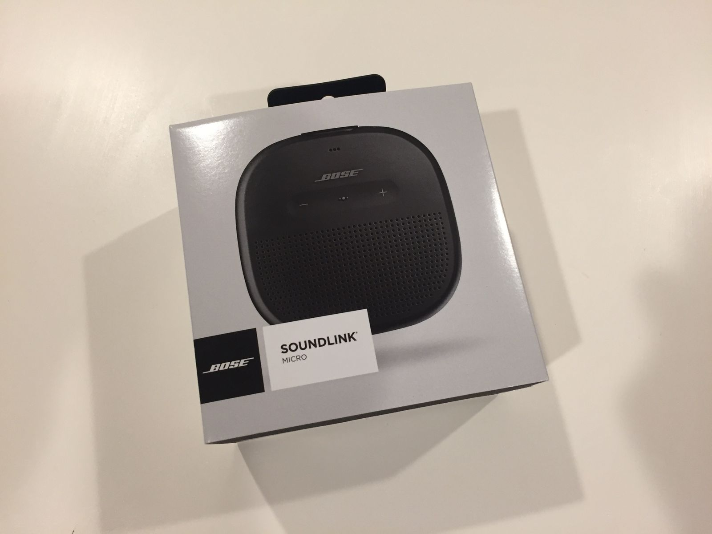
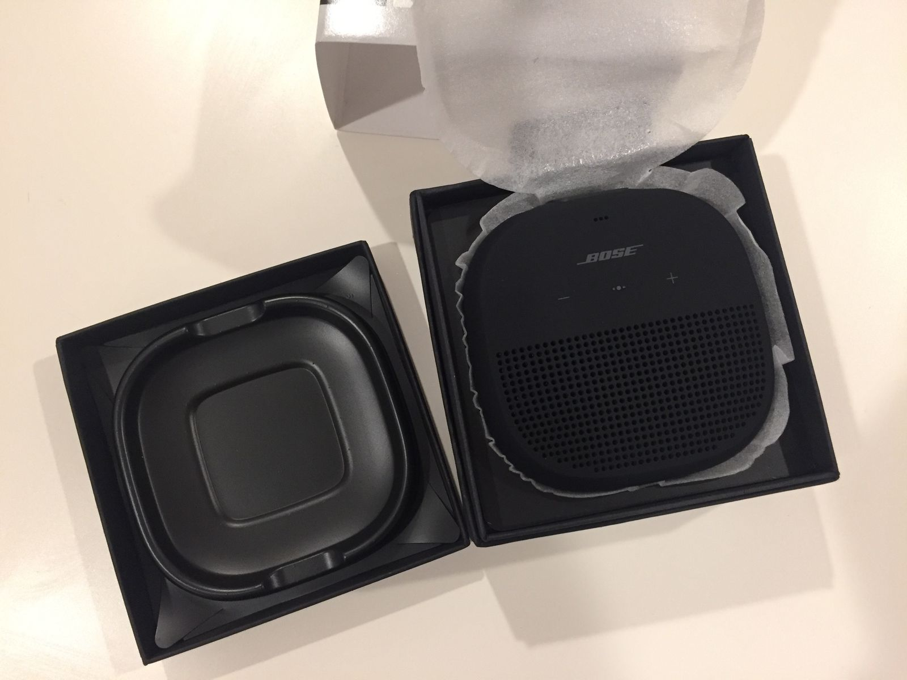
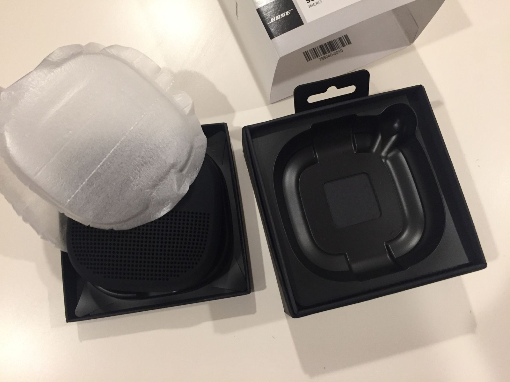
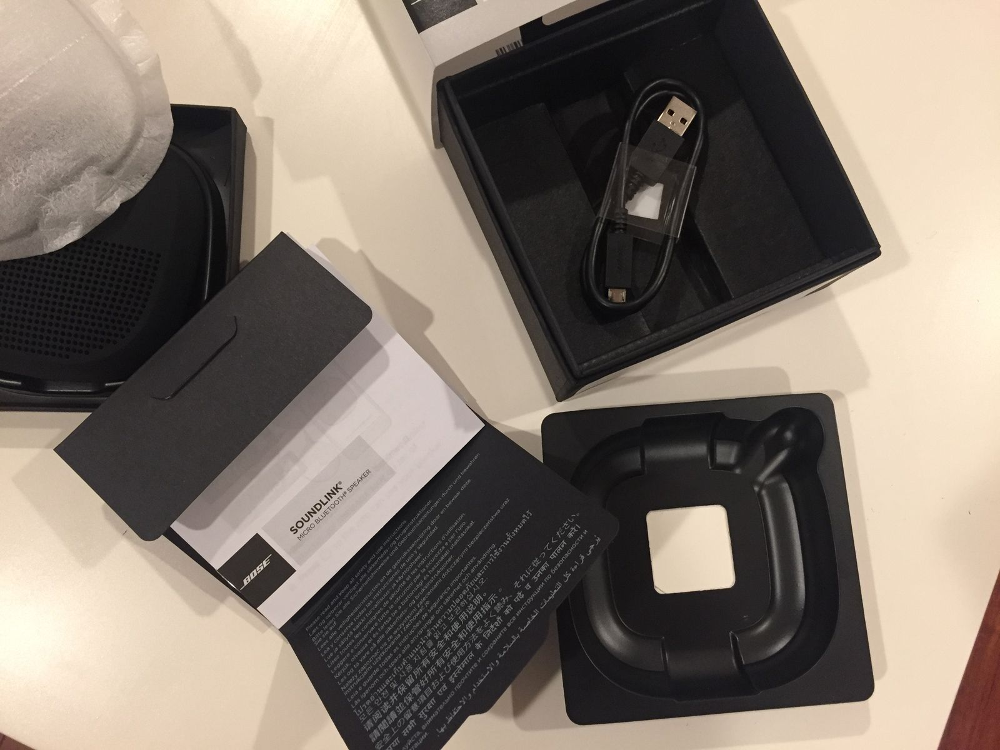
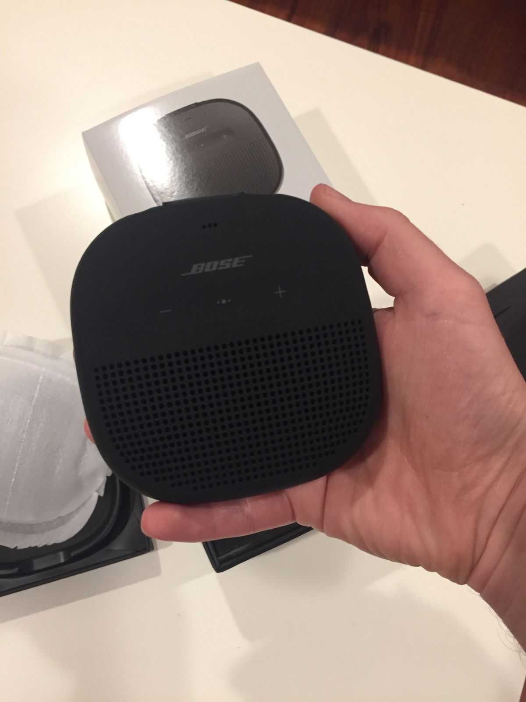
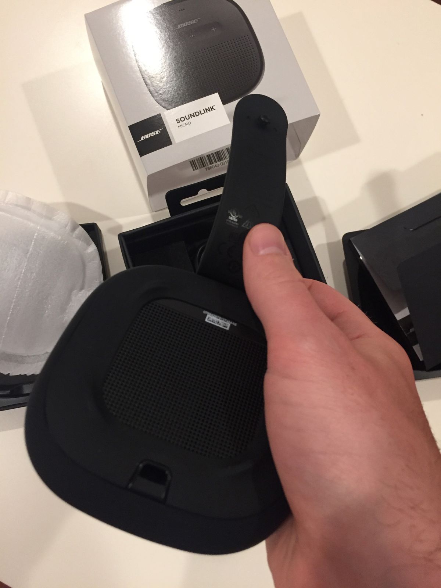

Bose Soundlink Micro Unboxing
My cousin was shocked when she heard that I wasn't bringing a bluetooth speaker on my trip. I didn't think it was that big a deal. Apparently it is. So I went out and got a Bose Soundlink Micro. A friend of mine recently started working at Bose and he asked me to do an unboxing and first impression. As a mechanical design engineer who develops consumer products, I often get more excited about the packaging than using the product. So here goes.

The box is fairly standard. There is a paper sleeve around a cardboard box with a plastic clip on top for retail racks. Not shown in the image above is a sealed clear plastic film, which I quickly removed with a knife. I insert the knife from the top down the paper sleeve so as to not cut anything except the plastic film.

After removing the paper sleeve, there is a black matte cardboard case that houses the speaker. It is split into a top portion and bottom portion that fit together nicely with some overlap. The cardboard itself is impressively thick and sturdy. A vacuum formed plastic piece is glued to the top portion that helps hold the speaker in place. Protecting the speaker is a thin foam film in a clamshell shape.

Once I took the speaker out, I know that there were goodies underneath for me. However, it was unclear how to get to them. You see the square in the middle of the vacuum formed plastic housing on the bottom half of the case? That's not actually plastic—it's a hole to a paper envelope underneath. It took me a bit to figure out and I couldn't get a good drip on the plastic to remove it. Ultimately, I just had to flip the whole box upside down.

My goodies turned out to be that envelope full of papers that I didn't look at and a very short USB cable. The product had a good weight to it, but it wasn't too heavy. The weight suggested it was the real deal. The product enclosure is a tacky, rubbery black material, as is becoming more common in these kinds of consumer products. I'm not sure whether Bose led the charge on this material change, but I recall seeing it in earlier Soundlinks. It feels nice and approachable, telling you that it can take some damage or be thrown into a bag to go to the beach. There's even a nifty strap on the back so you can attach it to things.

When I went to turn it on, I was disappointed to find that it wasn't charged. As most products like this come with about a half charge, I was very surprised that I would need to wait before I could use it. Thankfully, it charged to 40% fairly quickly so I got to test out the sound.
Bose products have always produced incredible sound and I was not disappointed here. For a speaker so small, it was able to go to pretty low frequencies. Similarly, some of the softer sounds that often get lost on cheap speakers came through wonderfully. I say this just from listening to the first 30 seconds of Hotel California.
10/10
